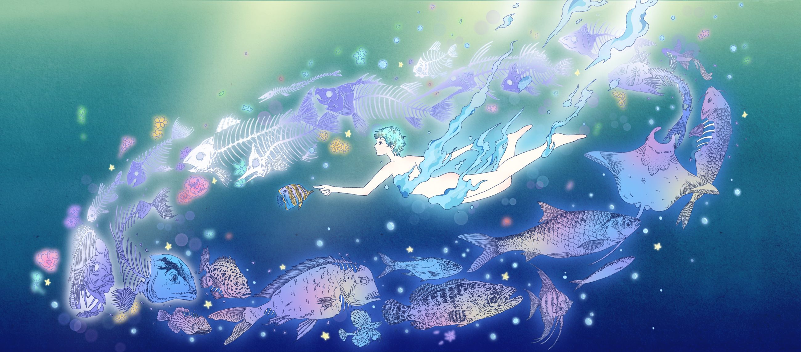

Where Bones Become Breath · Digital Illustration
01 / 04
Illustrator and game designer building quiet, emotional worlds from nature, myth and memory.
Illustration BFA, Sequential Art Minor
Maryland Institute College of Art · Baltimore, MD
Open to Summer 2027 Internships
Game Design · Concept Art
Vael
The rich have bought a doorway to peace. On the other side, a consciousness billions of years old is waiting.
World
In the mid-22nd century, an anxious Earth buys calm as a luxury. Threshold Corp sends wealthy clients to Vael, a planet whose spores erase pain — but the whole planet is a single living mind, and it is watching.
Art Direction
Inspired by Moebius and Love, Death + Robots Season 3: fine linework, open space, tiny figures in vast landscapes and a soft, restrained palette.
What I Designed
Worldbuilding · characters · creatures · vehicle · costumes & props · environments · flora & minerals
Book illustration, game art, worldbuilding, packaging and visual development — let’s make something.